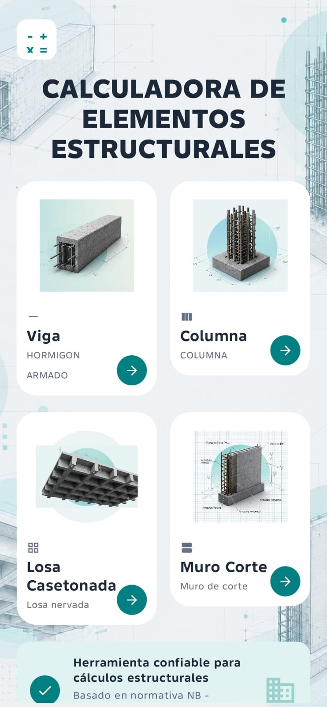
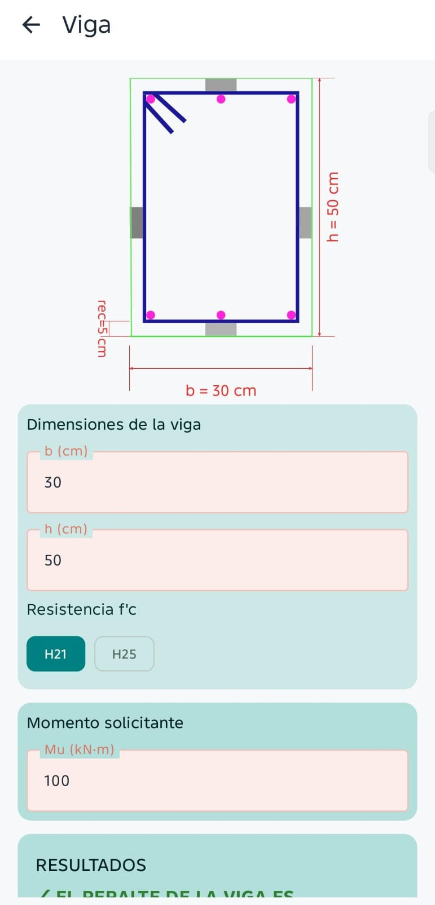
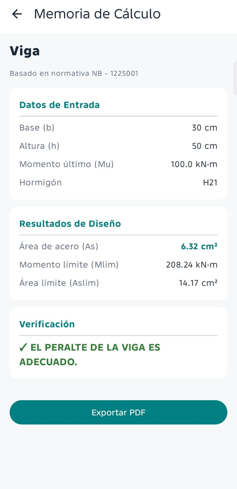
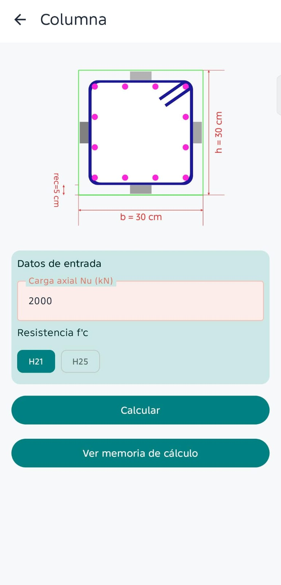
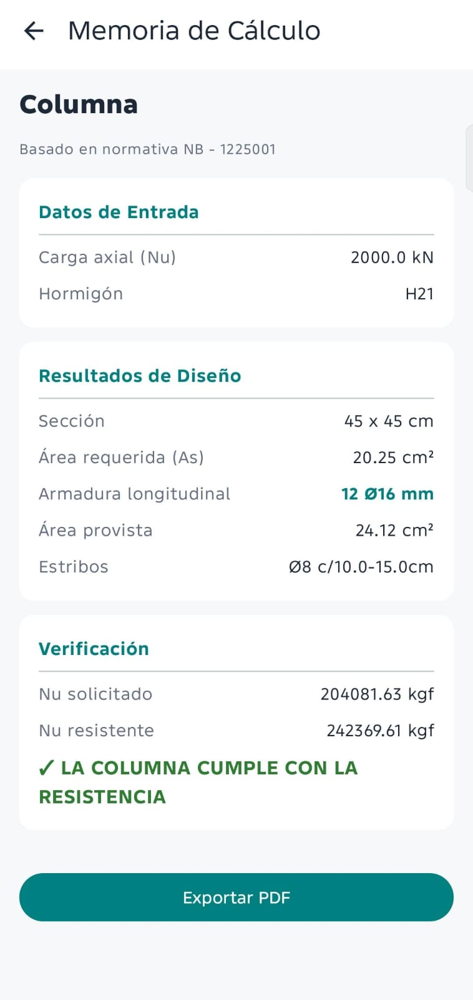
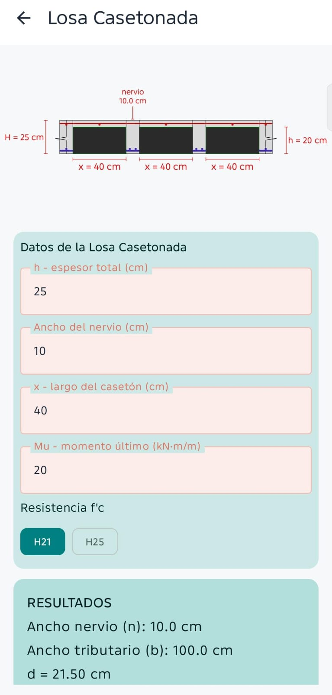
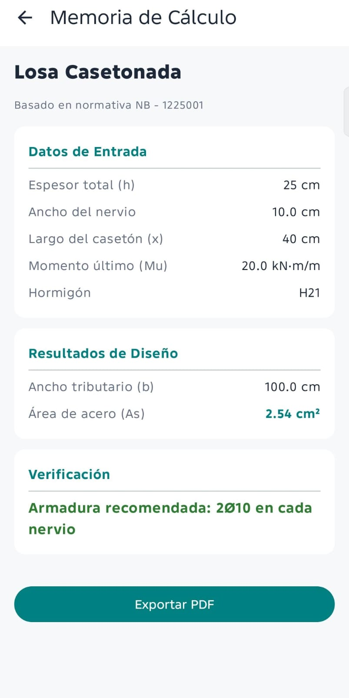
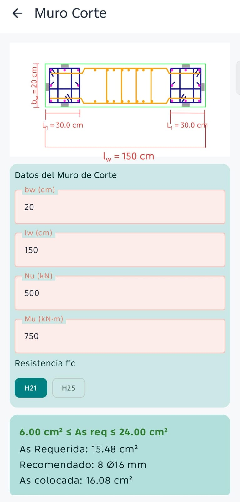
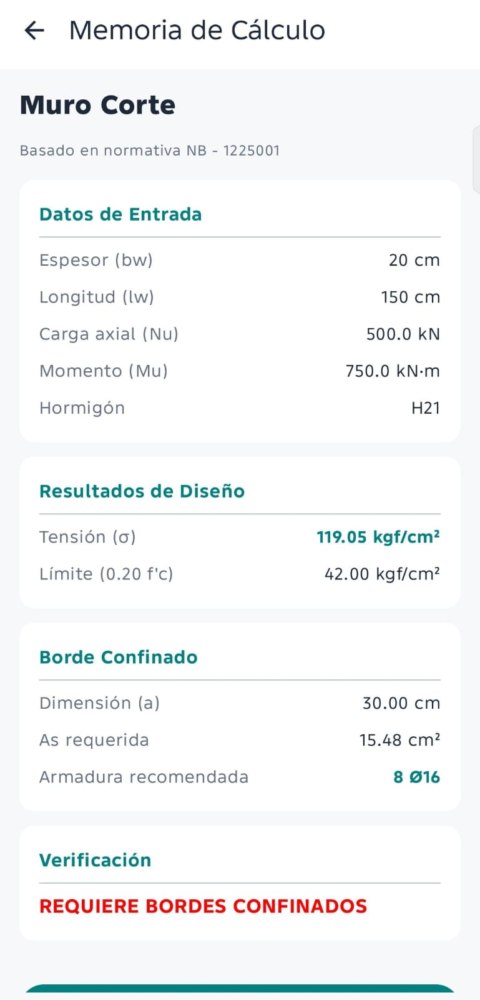

Cuatro calculadoras
Viga, columna, losa reticular y muro de corte en una sola aplicación.
Verifica vigas, columnas, losas reticulares y muros de corte con diagramas a escala, cotas dinámicas y memoria de cálculo exportable.
Del ingreso de datos al diagrama y la memoria PDF.
Viga, columna, losa reticular y muro de corte en una sola aplicación.
Los dibujos se adaptan automáticamente a las dimensiones ingresadas.
Exporta resultados para compartirlos o guardarlos directamente en el celular.
Desliza para conocer los módulos.









Escríbenos y te explicamos los precios, la compatibilidad y la activación.